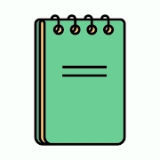

Zettel Notes no para de actualizarse e implementar nuevas mejoras. Tras la sincronizacion WebDAV, añadir los accesos directos Markdown agrupados en un único icono,… Llegan los atajos de teclado.
Algunas de la novedades que mas me han gustado a mi, está :

Tengo un teclado Bluetooth sencillo, de estos que compras en Aliexpress y mi tablet Huawei de 10". Cuando hace una semana comencé a editar con Zettel Notes, note como que el teclado iba por un lado y la aplicación por otro.
Aunque podías escribir sin ningún problema, si que es cierto que echaba de menos atajos como cortar un texto, pegar, guardar la nota,…. Dejé la sugerencia al desarrollador y en una semana ha implementado los atajos más usuales.
La experiencia es simplemente brutal!!! No necesito tocar la pantalla para buscar, crear una nota, comenzar a editar, cambiar entre el modo edición y visualización de la nota Markdown,… Vamos, que me siento como si estuviera utilizando una aplicación de escritorio.
Ya no solo pienso en todos aquellos que editan en Android, sino también en aquellos que tienen un Chromebook.
Desde mi punto de vista, Zettel Notes es la mejor aplicación para método Zettelkasten y editor de Notas Markdown.
Cuando una aplicación la utilizas porque te sientes cómodo, quiere decir que es una buena aplicación.
Pero lo mejor de todo es que siento que mis notas están seguras, ya que mediante la sincronización, a día de hoy no he perdido ninguna y eso es genial.
Estos son algunos de los atajos por defecto, pero si no te gustan como están y quieres personalizarlo, puedes hacerlo:
También hay atajos para acceder al menú de relación con otras notas situado en la parte izquierda, añadir etiquetas, el autor,…
También podemos mediante añadir de un modo sencillo sintaxis Markdown. Ejemplo:
Aunque no está entre los atajos, para seleccionar un bloque de texto es tan sencillo como situarnos en el texto que queremos seleccionar y pulsando la tecla de Mayúsculas, pulsaremos las teclas con flecha hacia arriba, abajo, izquierda, derecha.
Publicado por Angel el Monday 10 January del 2022
También te puede interesar:
Powered by org-bash-blog
Written in OrgMode with Emacs and converted to HTML with Pandoc

Este obra está bajo una licencia de Creative Commons Reconocimiento-NoComercial-CompartirIgual 4.0 Internacional.